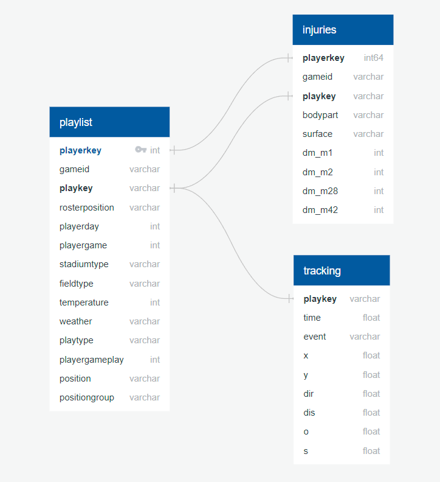

Database Processing
The Data Sources
Our Data was acquired from two NFL Kaggle Challenges:
The first sets of data provide information on gross physiological injuries such as foot and
knee injuries,
whereas the second sets of data provide information regarding concussive injuries. It is likely that the conditions
for
each of these types of injuries are different, so this will involve a multi-step analysis to assess the parameters
that
have the highest impact on each type of injury and the severity of the injuries.
The Injury Analytics Dataset
The Injury Analytics dataset comes from the 1st and Future Analytics source, which track lower-body
injuries across 2 seasons. These data were stored in a PostgreSQL database, using SQL Alchemy to pull the data from each table for processing,
with the exception of the tracking data. The size of the tracking data was prohibitively large for SQL Alchemy on a local server,
with over 76 million rows. To import this data in the Python files, the data table was downloaded as a csv file from the
SQL server into a folder labeled NFL_Turf, prior to being read into the Python file. The data were connected with the following Entity Relational Diagram (ERD).

The Concussion Dataset:
The Punt Analytics dataset observed player conscussions over 2 seasons. We used 5 of the complete datasets
available from the source. Upon storage in our database, 4 tables were merged using PG Admin and used to create a new table called punt_analytics. This
table was imported into the Python files using SQL Alchemy as were done with the Injury tables. Also similar to the Injury data,
the ngs table (tracking data) was too large to import using SQL Alchemy and again were downloaded locally and imported to Python
using Pandas into a folder labeled NFL_Punt. Only the original data are represented in the ERD.


Cleaned and Exported Dataframes
To maintain the fidelity of the original data, processed data from both of the data sources were saved into a new
database called NFL_Injuries. The data saved were the Random_Forest_Outputs, Neural_Network_Outputs, Concussion_Analysis, and clean_play_injuries.
These tables were pushed to the SQL server using SQL Alchemy.